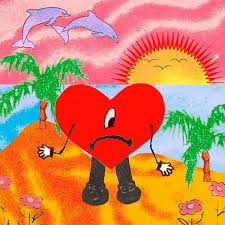

Lanzado en febrero de 2025, este álbum captura una esencia íntima y reflexiva. A través de sus letras, Benito invita a valorar los momentos efímeros, mezclando ritmos experimentales con una lírica que celebra la memoria y las experiencias compartidas.
NADIE SABE
MONACO
FINA
HIBIKI
MR. OCTOBER
CYBERTRUCK
VOU 787
SEDA
GRACIAS POR NADA
TELEFONO NUEVO
BABY NUEVA
MERCEDES CAROTA
LOS PITS
VUELVE CANDY B
BATICANO
NO ME QUIERO CASAR
WHERE SHE GOES
THUNDER Y LIGHTNING
PERRO NEGRO
EUROPA :)
ACHO PR
UN PREVIEW
Bad Bunny
Nadie sabe lo que va a pasar mañana
Lanzado el 13 de octubre de 2023, este proyecto marca un retorno al trap agresivo. Con 22 temas, Benito explora la fama, el orgullo de sus raíces y colaboraciones de alto nivel.

Moscow Mule
Después de la Playa
Me Porto Bonito
Tití Me Preguntó
Un Ratito
Yo No Soy Celoso
Tarot
Neverita
La Corriente
Efecto
Party
Aguacero
Enséñame a Bailar
Ojitos Lindos
Dos Mil 16
El Apagón
Otro Atardecer
Un Coco
Andrea
Me Fui de Vacaciones
Un Verano Sin Ti
Agosto
Callaíta
Bad Bunny
Un Verano Sin Ti
Publicado el 6 de mayo de 2022, este cuarto álbum de estudio se convirtió en un fenómeno global. Con un sonido 360° que recorre el Caribe, Benito fusiona reggaetón, mambo y synth-pop para narrar un viaje emocional de desamor y fiesta bajo el sol tropical.